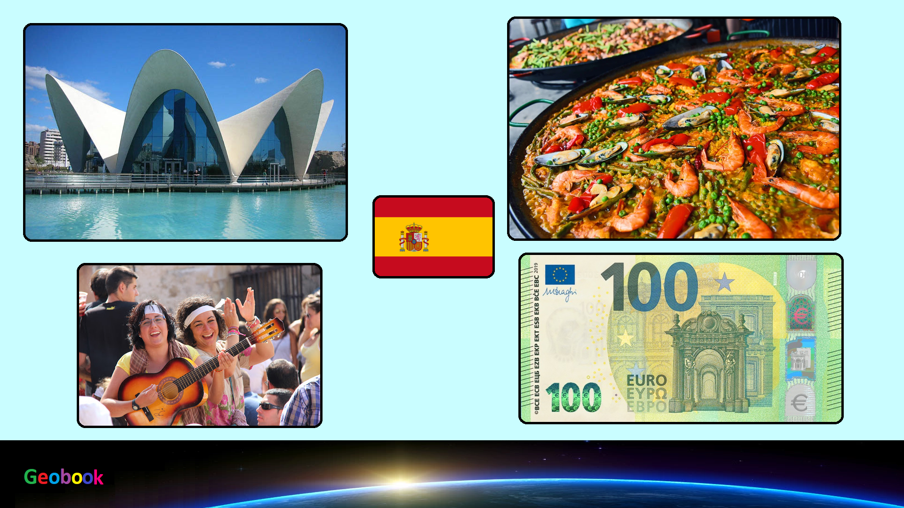

____
Традиционная еда
Испанский омлет, или картофельная тортилья — По легенде, бедная жительница Наварры приготовила испанскому генералу картофельный омлет из всех продуктов, что смогла найти в доме. Ассортимент был небогат — картофель, лук да несколько яиц, но генералу блюдо пришлось по вкусу, и вскоре простой рецепт стал очень популярен.
Андалусия — В летние месяцы на юге Испании нет лучшего спасения от жары, чем хорошо охлажденный томатный суп гаспачо. Помимо помидоров, в него добавляют огурцы, лук, оливковое масло и чеснок, а подают, как правило, с тостами и красным перцем.
Паэлья — В Испании можно встретить немало вариаций знаменитой паэльи, но в любом случае ее обязательным ингредиентом будет рис.
Наварра — При приготовлении каракатиц, как правило, применяется небольшая хитрость — ее собственные чернила используются для вкуса, а для интенсивности цвета добавляются искусственные. Пикантности блюду придают лук, чеснок, петрушка, кайенский перец и непременный бокал вина.
____
